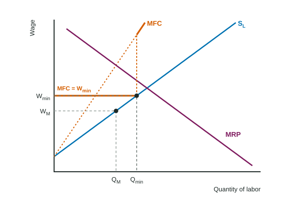

In an invented mountain county there is one hospital, and nearly every nurse in the county works there. The hospital could bring in more nurses by offering more pay, but it would have to pay the raise to every nurse already on staff. That extra cost is the key to this topic: it makes the hospital hire fewer nurses, and pay them less, than a competitive market would.
One buyer of labor
A monopsony is a market with a single buyer. In labor markets it is one employer that hires nearly all the workers of some kind in an area: the only hospital, the only mine, the only large factory. A wage taker (Topic 5.3) can hire as many workers as it wants at the market wage. A monopsonist cannot: it faces the whole upward-sloping labor supply curve, so each extra worker requires a higher wage, and that wage goes to every worker.
Why MFC lies above labor supply
The marginal factor cost (MFC) of a worker is the change in total labor cost from hiring her. For a monopsonist it is her wage plus the raise every other worker gets.
Worked example: MFC from a table. The Caddock County hospital (invented) must pay $8 an hour to hire 1 nurse, $10 for 2, $12 for 3, $14 for 4 and $16 for 5, and every nurse gets the same wage.
- Total labor cost = wage × nurses: $8, $20, $36, $56 and $80.
- MFC = change in total labor cost: $8, $12, $16, $20 and $24.
- Check the third nurse: her own $12, plus $2 more for each of the first two nurses: .
MFC is above the wage for every nurse after the first, and it rises faster. On a graph, MFC starts where SL starts and is twice as steep when SL is a straight line.
Hiring and the wage: two steps
The monopsonist uses the same rule as any firm, MRP = MRC, with its MRC being MFC:
- Quantity: hire where MRP = MFC (from a table, the last worker whose MRP is at least her MFC).
- Wage: go straight down from that quantity to the labor supply curve. That is the lowest wage that brings in that many workers, and the firm has no reason to pay more.
In the hospital, MRPs of the nurses are $30, $26, $22, $18 and $14. The third nurse adds $22 and costs $16; the fourth adds $18 and costs $20. So the hospital hires 3 nurses and pays the $12 that labor supply says 3 nurses need. Its wage bill is dollars an hour.
Readers see two slips here every year: reading the wage from the MRP = MFC crossing ($16 or $22 here) instead of from labor supply, and hiring where MRP meets labor supply (4 nurses) as a wage taker would. The crossing gives the quantity; labor supply gives the wage.

Draw it with Wage on the vertical axis and Quantity of labor on the horizontal axis, label SL, MFC and MRP, and mark QM and WM with dashed lines to the axes.
Compared with a competitive labor market
| Competitive labor market | Monopsony | |
|---|---|---|
| Labor supply the firm faces | horizontal at the market wage (S = MFC = W) | the upward-sloping market SL |
| MFC | equals the wage | above the wage |
| Hiring rule | MRP = MFC = W | MRP = MFC, wage read on SL |
| Workers hired and wage | where MRP meets SL | fewer workers, lower wage |
| Deadweight loss | none | between MRP and SL, from QM to QC |
A minimum wage in a monopsony
Suppose the county sets a minimum wage of $14 for nurses. Up to 4 nurses are willing to work at $14. For those nurses, hiring one more no longer raises anyone else's pay: everyone already earns $14. So MFC is flat at $14 out to the labor supply curve.
Worked example: the minimum wage.
- New MFC: $14 for each of nurses 1 to 4; a fifth would need $16 for everyone.
- Hire: the fourth nurse adds $18 and costs $14, so she is hired; the fifth adds $14 but would cost far more. Hire 4.
- Result: the wage rises from $12 to $14 and employment from 3 to 4.

A minimum wage set exactly at the competitive wage leads the monopsonist to hire the competitive quantity and removes the deadweight loss. Set much above the competitive wage, it lowers employment again, as it would in a competitive labor market. Topic 6.4 compares these cases with other government policies.